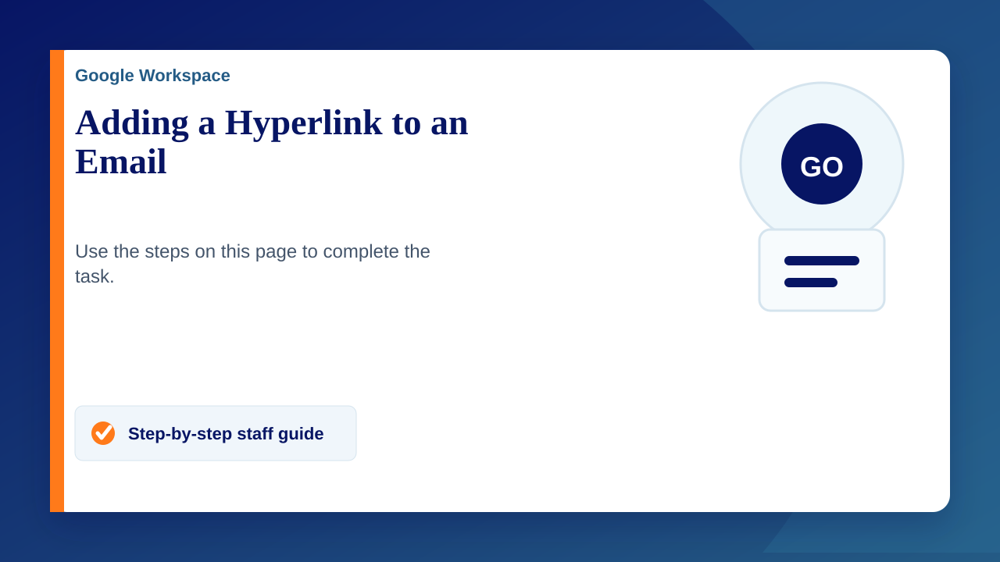

Sometimes links are extremely long and can clog up an email. leaving it looking ugly and unprofessional. Stuffing that link into one or a couple of words can really neaten up and email, here's how to do it.
Adding a Hyperlink on Gmail
- Compose a new email
- Use CTRL + K to bring up the hyperlink menu.
- Type in the text you wish to be hyperlinked.
- Type or paste the URL into the "Web address" field.
- Click ok.
There are a couple of other variations of this which can be done e.g. If you've written a big email and want to covert a word or sentence of it into a link, you can highlight the text and press CTRL + K to convert that specific text into a link.
The video demonstrates these.
Adding a Hyperlink in Outlook
- Compose a new email
- Use CTRL + K to bring up the hyperlink menu or navigate to the 'insert' tab and click on 'Hyperlink'
- Type in the text you wish to be hyperlinked.
- Type or paste the URL into the "Web address" field.
- Click ok.
This is identical to the Gmail method other than the hyper link menu looking slightly different